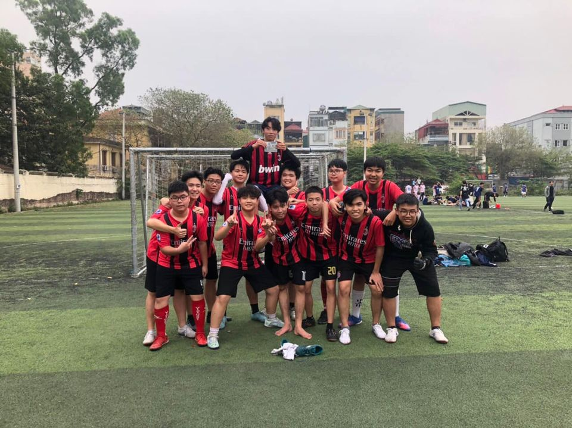

FC Bóe khóa 22-25 Toán 1.
FC Bóe.
Hay còn có tên khác là FC Coolpiad.
FC Bóe.
Hay còn có tên khác là FC Coolpiad.
Các thành viên tiêu biểu của FC Bóe
Số áo
Tên Thành Viên
Vị trí
07
Nguyễn Thành Tài a.k.a zizou
Tiền đạo/Tiền vệ
13
Nguyễn Sơn Hải
Tiền đạo/Tiền vệ
05
Nguyễn Nam Sơn a.k.a MaSon
Hậu vệ cánh
04
Đàm Minh Quang a.k.a Mon
Trung Vệ
01
Vũ Tiến Anh a.k.a Ánh Tiên
Thủ môn
3 tuyến chính của FC Bóe
1.Tuyến phòng thủ(Thủ môn+Hậu vệ)
2.Tuyến giữa(Tiền vệ)
3.Tuyến công(Tiền đạo+Tiền vệ)
Chi tiết về đội hình, chiến thuật
Toàn bộ thành viên của FC Bóe.
Ảnh chụp trận lật kèo ngoạn mục trước đương kim vô địch của FC Bóe

Các thông tin khác
Hỗ trợ